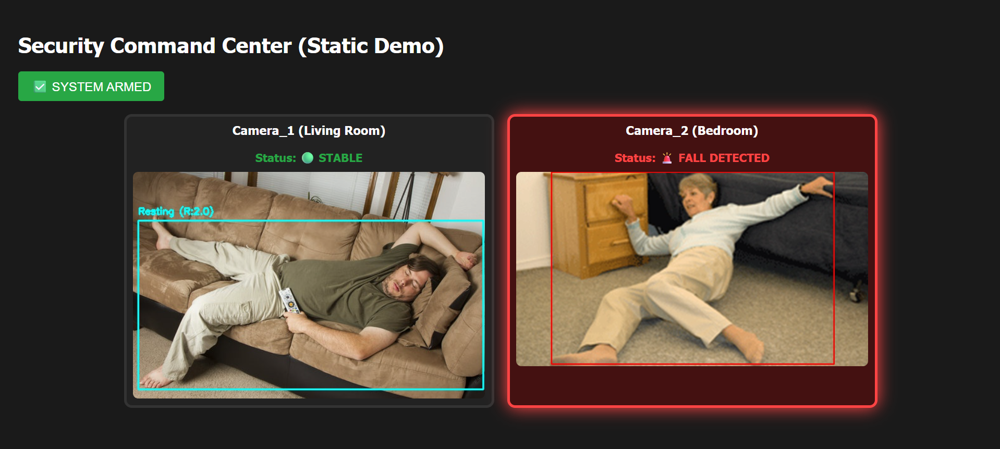

Autonomous Fall Detection.
An open-source, edge-optimized safety solution designed to run local computer vision on low-end hardware without compromising privacy.

Why Institutional Leaders Choose Falltect AI
99.2% Accuracy
Trained on specialized datasets to minimize false positives while ensuring critical events are never missed.
Privacy-First
All processing happens locally on the edge device. No video ever leaves the facility.
Rapid Alerting
Average latency from fall event to alert dispatch is under 1.5 seconds.
Limitation of Liability & User Agreement
Educational Use: Falltect AI is an innovation prototype developed for educational and research purposes. It is not a certified medical device and should be treated as a technical demonstration.
System Limitations: While powered by advanced AI—including Random Forest and XGBoost architectures—the system may not detect all falls (False Negatives) or may trigger false alerts. Performance is strictly dependent on camera placement, environmental lighting, and network stability.
Non-Substitution: This system is an assistive tool only. It must not replace human supervision, professional care, or established emergency services.
Liability Agreement: Use of this research and any associated software (including .exe and .apk deployments) is at your own risk. The developers and founders are not liable for any injuries, medical emergencies, or damages resulting from the use or failure of this system.